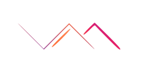

Développeur Full Stack
Architecte de solutions digitales innovantes
À Propos
Avec plus de 10 ans d'expérience dans l'écosystème technologique, j'ai évolué du développement full-stack au leadership technique, accompagnant la transformation digitale d'entreprises du secteur bancaire et aéronautique. Ma passion pour l'innovation me pousse à explorer constamment les nouvelles technologies, de l'IA aux architectures cloud, tout en maintenant une vision pragmatique centrée sur la valeur métier et l'expérience utilisateur.
Voir mes compétences